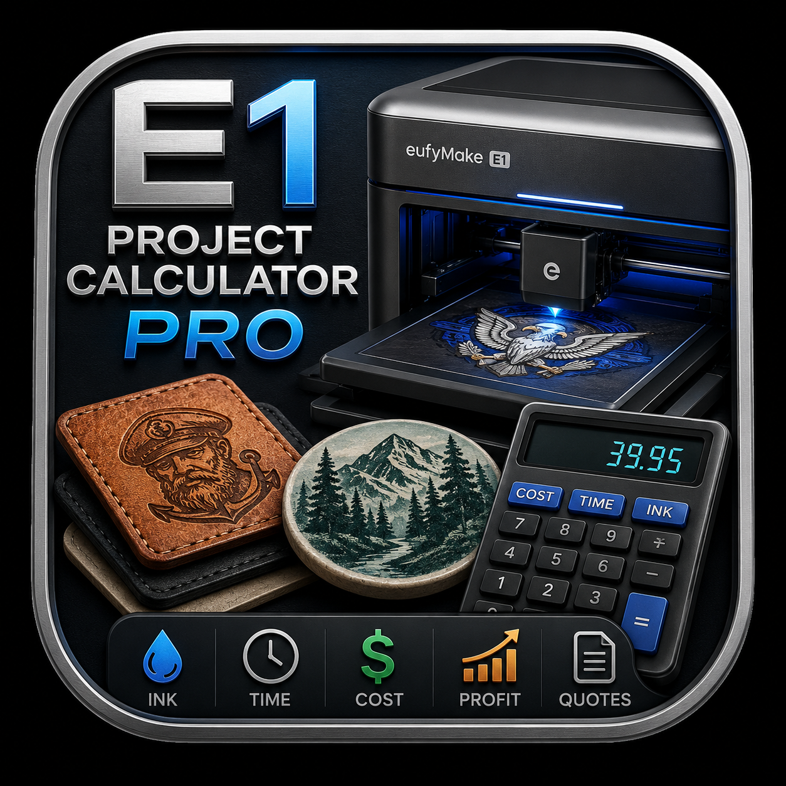
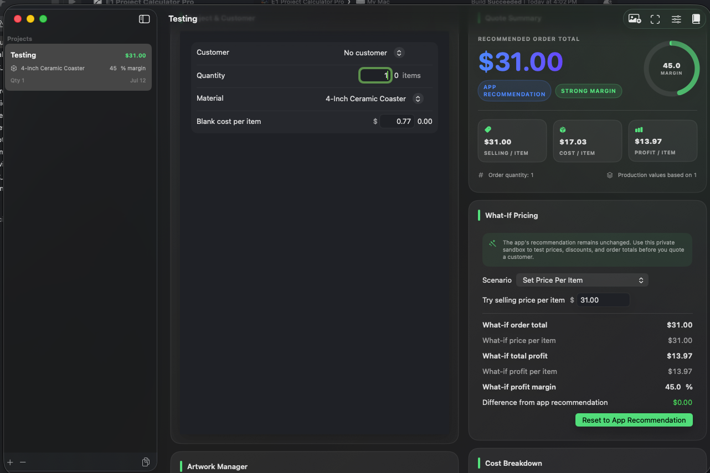

Accurate Pricing
Build a true cost from materials, labor, E1 time, consumables, and overhead.

E1 ProjectA focused macOS application for calculating the true production cost, recommended selling price, and expected profit for EufyMake E1 projects.
Requires macOS 14 Sonoma or newer · Apple Silicon or Intel Mac

Build a true cost from materials, labor, E1 time, consumables, and overhead.
See the app’s cost-based order recommendation and expected margin.
Try a price per item, discount, or order total without changing the recommendation.
Create customer quotes, internal cost reports, CSV files, and portable projects.
Keep projects, templates, customers, materials, artwork, and notes together.
A modern native macOS interface with dark and light appearance support.
E1 Project Calculator Pro groups every cost into understandable categories, then calculates total production cost, cost per item, recommended selling price, profit, and margin.
The app keeps its recommendation visible while giving you a separate place to explore different customer prices.
Start fresh, copy a similar job, or apply one of your reusable templates.
Attach the artwork and import or enter estimated ink usage and print time.
See cost per item, order total, total profit, and actual profit margin.
Test a price per item, a discount, or a total order price before quoting.
The recommendation never changes while you experiment. Enter a selling price per item, apply a discount, or try a total order price. The app immediately recalculates total profit, profit per item, margin, and the difference from its recommendation.
Example: 100-item order with $442.85 production cost.
Compare a single custom coaster with a 10-, 50-, or 100-piece order.
Account for blanks, primer, white, color, varnish, setup, and finishing.
Track custom material costs, artwork time, printing, and packaging.
Create your own materials and templates for the products you sell most.
I built E1 Project Calculator Pro after purchasing and using the EufyMake E1. I wanted a clearer way to understand the real cost of each project before committing to a customer price.
The application is shared free with the E1 community. User feedback, bug reports, and feature requests directly guide future releases.
E1 Project Calculator Pro is free to download and use. Contributions are completely optional and help support compatibility work, bug fixes, documentation, and future improvements.
Download the latest macOS release and calculate with confidence.